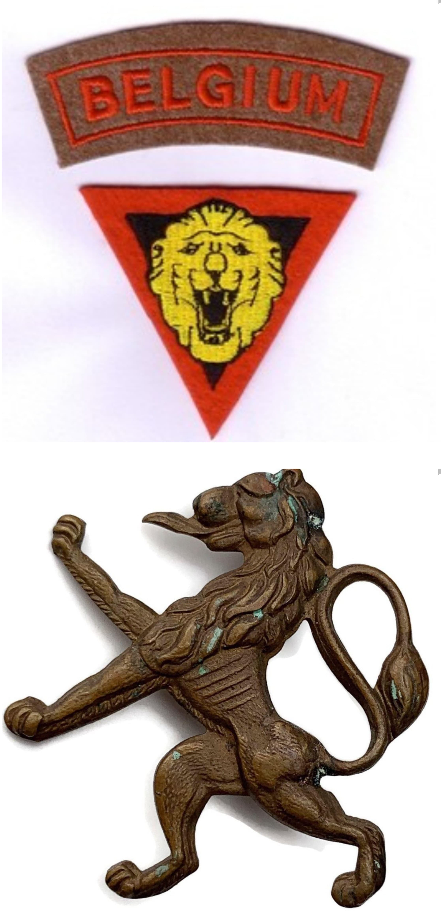
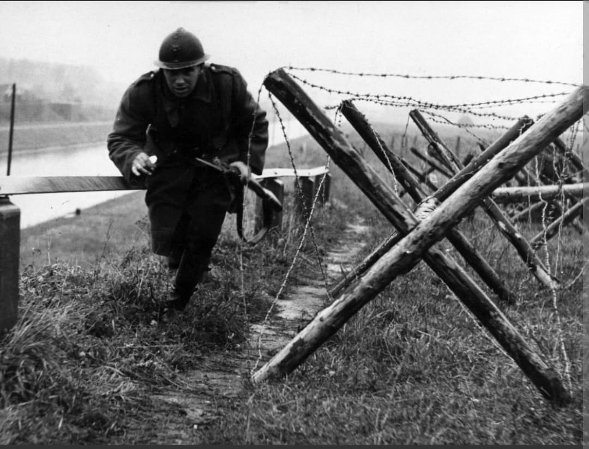

Introduction
Après la défaite et l'occupation de la Belgique en mai 1940, la flamme de la résistance ne s'est jamais éteinte. De nombreux militaires, patriotes et volontaires ont réussi à rejoindre la Grande-Bretagne pour reconstituer des unités combattantes sous la bannière des Forces belges libres.
Intégrées aux forces alliées, ces unités — dont la plus célèbre demeure le 1er Groupement indépendant belge, plus connu sous le nom de Brigade Piron —, ainsi que les aviateurs et marins belges, ont joué un rôle actif et hautement symbolique dans la libération de l'Europe de l'Ouest.
Origine et constitution
Sous l'impulsion du gouvernement belge en exil à Londres et de figures militaires comme le colonel (puis général) **Jean-Baptiste Piron**, les forces en exil se structurent dès 1940-1941. Regroupant des évacués de Dunkerque, des évadés de Belgique occupée et des ressortissants de la diaspora, l'unité s'entraîne intensivement au Royaume-Uni.
L'insigne et les écussons distinctifs des forces belges arborent fièrement le lion belge tricolore ou le lettrage distinctif « BELGIUM », garantissant leur identité nationale au sein des armées alliées.

Août 1944 - Mai 1945 : De la Normandie à la Libération
Débarquée en Normandie en août 1944 (peu après le D-Day) au sein de la 2e armée britannique, la Brigade Piron participe activement à la poursuite des forces allemandes. Elle s'illustre lors de la libération de plusieurs communes côtières françaises et belges, avant d'entrer en triomphante libératrice dans Bruxelles et d'autres villes de Belgique en septembre 1944.
Par la suite, elle combat dans les Pays-Bas et en Allemagne jusqu'aux derniers jours du conflit en mai 1945.

Les aviateurs de la RAF et les forces navales
L'effort de guerre belge ne s'est pas limité aux forces terrestres. Les pilotes belges engagés au sein de la Royal Air Force (notamment au sein des fameux escadrons 349 et 350) se sont distingués par leurs victoires aériennes lors de la bataille d'Angleterre et des offensives au-dessus de l'Europe.
De même, des marins belges ont armé des corvettes et des patrouilleurs de la Royal Navy pour escorter les convois transatlantiques vitaux face à la menace des sous-marins allemands.
Voir aussi
Page du Musée HOP WW2 – Section Unités & Divisions